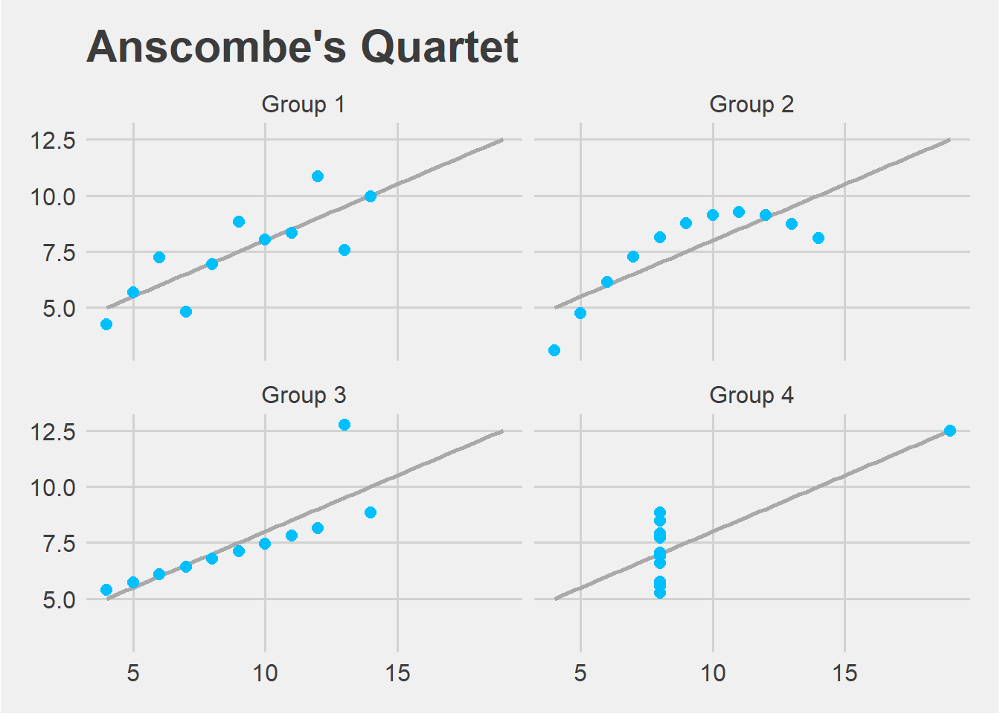

library(tidyverse)
library(tidymodels)
library(ggthemes)
library(kableExtra)Anscombe’s Quartet
Introduction
Anscombe’s quartet comprises four data sets that have nearly identical simple descriptive statistics, yet have very different distributions and appear very different when graphed. I am going to repeat calculations and graphs using a tidyverse approach.
Packages
Data
Load data from csv created in the make_tidy_csv.R script.
data <- read_csv("anscombe.csv")Rows: 44 Columns: 3
── Column specification ────────────────────────────────────────────────────────
Delimiter: ","
chr (1): group
dbl (2): x, y
ℹ Use `spec()` to retrieve the full column specification for this data.
ℹ Specify the column types or set `show_col_types = FALSE` to quiet this message.Numerical Summaries
For each of the four datasets let’s evaluate some basic numerical summaries.
intercept <- function(x, y) {
data <- tibble(x = x, y = y)
model <- linear_reg() %>%
set_mode(mode = "regression") %>%
set_engine(engine = "lm") %>%
fit(y ~ x, data = data)
model %>%
tidy() %>%
filter(term == "(Intercept)") %>%
select(estimate) %>%
pull()
}
slope <- function(x, y) {
data <- tibble(x = x, y = y)
model <- linear_reg() %>%
set_mode(mode = "regression") %>%
set_engine(engine = "lm") %>%
fit(y ~ x, data = data)
model %>%
tidy() %>%
filter(term == "x") %>%
select(estimate) %>%
pull()
}
r_squared <- function(x, y) {
data <- tibble(x = x, y = y)
model <- linear_reg() %>%
set_mode(mode = "regression") %>%
set_engine(engine = "lm") %>%
fit(y ~ x, data = data)
glance(model) %>%
select(r.squared) %>%
pull()
}
data %>%
group_by(group) %>%
summarise(mean_x = mean(x) %>% round(1),
var_x = var(x) %>% round(1),
mean_y = mean(y) %>% round(1),
var_y = var(y) %>% round(1),
corr = cor(x, y) %>% round(2),
intercept = intercept(x, y) %>% round(2),
slope = slope(x, y) %>% round(2),
r_squared = r_squared(x,y) %>% round(2)) %>%
kable(col.names = c("Group",
"Mean X",
"Variance X",
"Mean Y",
"Variance Y",
"Correlation X and Y",
"Intercept",
"Slope",
"R Squared"),
format = "markdown")| Group | Mean X | Variance X | Mean Y | Variance Y | Correlation X and Y | Intercept | Slope | R Squared |
|---|---|---|---|---|---|---|---|---|
| Group_1 | 9 | 11 | 7.5 | 4.1 | 0.82 | 3 | 0.5 | 0.67 |
| Group_2 | 9 | 11 | 7.5 | 4.1 | 0.82 | 3 | 0.5 | 0.67 |
| Group_3 | 9 | 11 | 7.5 | 4.1 | 0.82 | 3 | 0.5 | 0.67 |
| Group_4 | 9 | 11 | 7.5 | 4.1 | 0.82 | 3 | 0.5 | 0.67 |
Scatterplots
Finally let’s plot the four datasets.
plot <- data %>%
ggplot(mapping = aes(x = x, y = y)) +
labs(title = "Anscombe's Quartet") +
geom_point(size = 3, color = "steelblue") +
geom_smooth(method = "lm", se = FALSE, alpha = 0.1,
color = "black", fullrange = TRUE, size = 1.5) +
facet_wrap(~group, labeller = as_labeller(
c(`Group_1` = "Group 1",
`Group_2` = "Group 2",
`Group_3` = "Group 3",
`Group_4` = "Group 4"))) +
theme_fivethirtyeight() +
theme(strip.text.x = element_text(size = 15))
plot
ggsave("anscombe.png", plot = plot)References
This Wikipedia page.